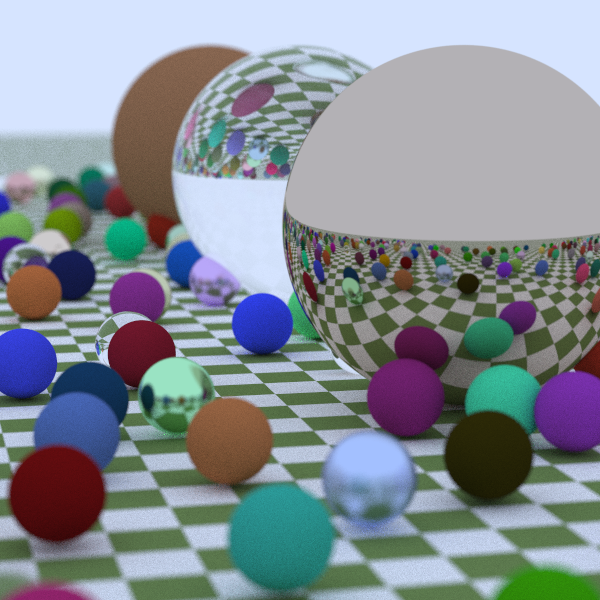
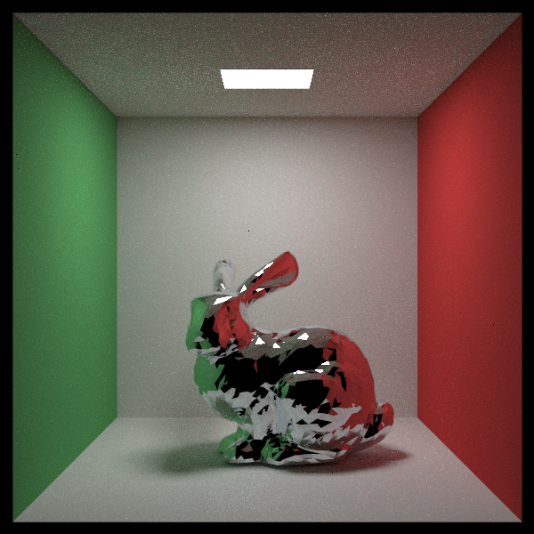

15618 Project Final Report -- Ray Tracing in CUDA
Jiaqi Song (jiaqison@andrew.cmu.edu)
Xinping Luo (xinpingl@andrew.cmu.edu)
URL: Ray Tracing in CUDA (raytracingcuda.github.io)
GITHUB: Jiaqi1song/RayTracing (github.com)
Summary
Our project implements a GPU-based ray tracer based on the CPU code (baseline) of three books in "Ray Tracing in One Weekend" series. We compare the performance of baseline code, OpenMP parallelized code and CUDA parallelized code and achieve a maximum of 8612x times speedup in four test scenes.
Background
Basic Knowledge of Ray Tracing
Rendering is a critical process in computer graphics, converting 3D models into 2D scenes. Compared with rasterization, ray tracing offers more photorealistic results by simulating how rays of light interact with objects in a scene, tracing their paths as they reflect, refract, or are absorbed by materials. As a result, ray tracing achieves realistic lighting, shadows, and reflections, making it the preferred method for high-quality rendering in film and visual effects.

The above image adopted from Nvidia Developer provides an intuitive understanding of how ray tracing works. In detail, rays are cast from a camera through each pixel on the screen into the scene, following a path that simulates how light travels in the real world. When a ray hits an object, it can reflect (bounce off the surface), refract (pass through transparent objects), or terminate if it absorbs into a surface. Reflection is calculated based on the surface’s material and angle, leading to mirror-like or glossy reflections. Refraction occurs in transparent materials, bending rays as they pass through surfaces like glass or water. This process of tracing rays through multiple reflections and refractions enables realistic rendering of complex light interactions, contributing to the high visual quality of ray tracing.
Basic Algorithm of Ray Tracing
The following pseudocode presents the basic algorithm of ray tracing renering.
# Iterate through objects in the world and find the closest hit
def world_hit(ray, rec):
closest_hit = None
for object in world:
if ray hits object and object is closer than closest_hit:
closet_hit = object
if closest_hit is not None:
# Record the detail of the final hit detail
rec = closest_hit.record()
return True
return False
# Compute the color of a pixel by tracing the ray in the world
def ray_color(depth, ray, world):
# If the recursion depth is zero or less, return black
if depth <=0:
return Color(0, 0, 0)
# Check if the ray hits anything in the world
if world_hit(ray, rec):
material = rec.material
else:
return background_color # Return the background color if no hit
# Compute the emitted color from the material
# Only light source emit color
# If this color is not black, then the ray just hits a light source
emitted_color = material.emit()
# Check if the material scatters the ray
if material.scatter():
attenuation, scattered_ray = ScatterRecord()
else:
return emitted_color # Return emitted color if no scattering
# The ray continues to travel in the world
return emitted_color + attenuation * \
ray_color(depth - 1, scattered_ray, world)
# Rendering each pixel independently
for pixel in image:
# Each pixel samples a number of rays for anti-aliasing
for _ in range(num_samples_per_pixel):
# Monte Carlo sampling of rays from camera to pixel
ray = SampleRayFromCameraToPixel(pixel_coordinate)
# Calculate the color that this ray brings to the pixel
pixel_color += ray_color(max_depth, ray, world)
# Take the average color of all sampled rays
pixel_color = pixel_color / num_samples_per_pixelThe ray_color function computes the color of a pixel by tracing a ray through a 3D scene. The function begins by checking if the maximum recursion depth (depth) is reached, returning black if true. It then determines if the ray intersects any object in the scene (world). If no intersection occurs, the function returns the background color. The intersection check is performed by world_hit function and it iterates through all objects in the world and find a closest hit and record the hitted object. This brute force solution is searching in linear space and should be optimized using BVH.
For intersections, the object's material properties are evaluated. If the material emits light, i.e. a light source, its emitted color is calculated. The function also checks if the material scatters the ray (e.g., reflection or refraction). If scattering occurs, a new ray is generated with reduced intensity (attenuation), and the function is recursively called with the scattered ray and decreased depth. The resulting color is a combination of the emitted color and the recursively calculated scattered light.
In the rendering loop, each pixel's color is computed by sampling multiple rays using Monte Carlo sampling for anti-aliasing. The final color of that pixel is the average color across sampled rays. It is worth noticing that this nested for loop can be fullly independent, which means that we can calculate each pixel independently, as well as calculating each sampled ray in a pixel independently with help of reduce sum. This independence is where massive thread parallelism can help computing many pixels/rays at the same time and speedup the application greatly.
Since the ray tracing rendering involves branching in the code, techniquely the parallelism would be thread parallelism instead of data parallelism. For this reason, we use OpenMP to parallelize the code on CPU. Given the CUDA provides SIMT (Single Instruction, Multiple Threads) programing abstraction, the rendering algorithm is inherently more suitable on GPU for its capability of massive thread parallelism. Regarding locality, ray tracing exhibits poor spatial locality because rays often traverse different parts of the scene, leading to scattered memory accesses. However, temporal locality can be exploited for frequently accessed resources, such as the material data or texture data.
Acceleration Structure: Bounding Volume Hierarchies
Bounding Volume Hierarchies (BVH) optimize the ray-object intersection checks by organizing objects into a hierarchical tree structure of bounding volumes, such as boxes. When a ray enters the scene, the BVH allows it to quickly bypass large areas without objects, only performing detailed intersection checks when necessary. This hierarchy significantly reduces computation time, especially in scenes with many objects.
Sampling Techniques in Ray Tracing
Sampling more rays in a pixel can improve rendering quality, but it also requires more computation time. Thus modern ray tracing relies on advanced sampling techniques to improve rendering quality. Sampling techniques reduce noise and enhance visual fidelity while maintaining computational efficiency. Our code combines three sampling techniques.
Monte Carlo sampling is widely used in ray tracing to handle complex light transport equations. It generates random rays within a hemisphere or cone around a surface point to approximate indirect lighting, reflections, and refractions. By averaging multiple samples, the algorithm produces smoother results, reducing artifacts like jagged shadows or noisy reflections.
Importance sampling optimizes the sampling process by prioritizing directions that contribute more significantly to the final image. Instead of sampling uniformly, it biases ray directions toward areas with higher light intensity or sharp features, such as specular highlights. This reduces variance and noise, especially in scenes with bright light sources.
Light sampling focuses on improving the accuracy of direct illumination by explicitly sampling light sources in the scene. Rays are cast directly toward light sources to evaluate their contribution to a surface. This approach ensures accurate shadow rendering and reduces wasted computation on non-contributing areas.
The pseudocode of ray_color function considering the above sampling techniques can be found in APPENDIX section.
APPROACH
Introduction
In this section, we are first going to talk about how we parallelize the ray tracing using OpenMP on CPU and CUDA on GPU, then we are going to show an optimization of using BVH to accelerate the hit search. While rays in one pixel can also be parallelized, neither of the two parallelism we introduce takes it to this far.
Our code is based on the CPU code of "Ray Tracing in One Weekend" series, which is the version of code that we call Baseline in the next section. Upon this code, we add support of triangle (mesh) object as well as animation of moving camera and moving object. Then based on this version, we add Openmp to the code with only the change of pragma. We call this version of code OpenMP, now to run the baseline code, we simply set the flag use_openmp=false.
The cuda code is a little different. To solve the several potential bugs resulting from its confusing definition of point, vector and color, we radically rewrite all those files and optimize the project structure regarding hittables, materials and utils. We supported random number generation and complex tree structure creation natively on GPU. Eventually, we manage to transplant most of the features supported on CPU to GPU, except for moving object, which requires more careful consideration of BVH reconstruction between frames. We this version of code CUDA.
We provide a render.sh for one to quick run and access the ray tracer on both CPU and GPU with various parameters for you to play with.
OpenMP Parallelism
In our project, OpenMP is utilized to parallelize the ray tracing rendering process on multi-core CPUs, leveraging task-level parallelism. By using OpenMP pragmas, the rendering loop is divided across available CPU cores, allowing multiple pixels to be processed simultaneously. Specifically, the #pragma omp parallel for directive is applied to the outer loop iterating over pixels, ensuring that each core handles a subset of the image pixels independently. The dynamic scheduling policy further balances the workload among cores by dynamically assigning pixels to threads as they become available, which is particularly beneficial for scenes with varying computational loads across pixels.
#pragma omp parallel for schedule(dynamic)
for pixel in image:
for _ in range(num_samples_per_pixel):
ray = SampleRayFromCameraToPixel(pixel_coordinate)
pixel_color += ray_color(max_depth, ray, world)
pixel_color = pixel_color / num_samples_per_pixelAdvantage of OpenMP
- OpenMP offers ease of programming with minimal changes to the original code.
Challenges of OpenMP
While OpenMP provides task-level parallelism, it lacks the ability to exploit fine-grained data-level parallelism inherent in ray tracing computations.
CPUs typically do not match the computational throughput of GPUs for highly parallel workloads, especially for operations like ray-scene intersection tests or shading calculations.
OpenMP also struggles with irregular memory access patterns, which are common in ray tracing due to rays traversing different regions of the scene.
Weakness of OpenMP
CPUs cannot mask thread divergence as effectively as GPUs, reducing the efficiency of numerous branching in ray tracing.
OpenMP’s performance is constrained by the limited number of CPU cores compared to GPU threads, which results in lower parallelism overall.
Overall, OpenMP provides an efficient and straightforward way to accelerate ray tracing on multi-core CPUs, making it a practical solution for achieving parallelism without requiring significant code restructuring.
CUDA Parallelism
CUDA enables fine-grained parallelism by leveraging the massive computational power of modern GPUs. In ray tracing, CUDA parallelizes the rendering process at the pixel level (and beyond), allowing thousands of threads to compute rays and their interactions simultaneously. In our implementation, each thread corresponds to a pixel, and the key to efficient CUDA implementation is designing thread hierarchies (blocks and grids) that map well to the GPU architecture. Similar to the assignment 2, a kernel takes in a square block of pixels on the image, in which rays of each pixel shall have a more similar start. The following is a code snippet to show you how the for loop is transformer to kernel launch.
// CUDA Kernel
__global__ void ray_tracing_kernel(Image image, World world, int max_depth) {
// Calculate pixel index based on thread and block IDs
int x = blockIdx.x * blockDim.x + threadIdx.x;
int y = blockIdx.y * blockDim.y + threadIdx.y;
// Ensure pixel is within image bounds
if (x >= image.width || y >= image.height) return;
Color pixel_color = Color(0, 0, 0);
for (int sample = 0; sample < num_samples_per_pixel; sample++) {
Ray ray = SampleRayFromCameraToPixel(x, y);
pixel_color += iterative_ray_color(ray, world, max_depth);
}
image.set_pixel(x, y, pixel_color / num_samples_per_pixel);
}
// Host function to launch the kernel
void render(Image image, World world, int max_depth) {
dim3 block_dim(16, 16); // Threads per block
dim3 grid_dim((image.width + block_dim.x - 1) / block_dim.x,
(image.height + block_dim.y - 1) / block_dim.y);
ray_tracing_kernel<<<grid_dim, block_dim>>>(image, world, max_depth);
cudaDeviceSynchronize();
}While GPUs are optimized for high-throughput computation, but they are not designed to handle deep recursion efficiently due to limited stack size. As a result, recursive ray tracing algorithms must be converted to iterative versions for CUDA. The key idea is to manage ray interactions (scattering, reflection, etc.) using an explicit stack or loop and maintain temporay variables for the dependencies between iterations. This avoids GPU stack overflow and ensures better control over the parallel execution. The iterative version of ray_color function is shown below.
def ray_color(depth, ray, world, lights):
final_color = color(0, 0, 0)
cur_attenuation = color(1, 1, 1)
cur_ray = ray
for i in range(depth):
# Check if the ray hits anything in the world
if cur_ray hits anything in world:
material = HitRecord()
else:
# Add background color and return if no hit
final_color += cur_attenutaion * background_color
return final_color
# Compute the emitted color from the material
emitted_color = material.emit() # Only light source emit color
# Check if the material scatters the ray
if rec.material.scatter():
attenuation, scattering_ray = ScatterRecord()
else:
# Add emitted color and return if no scattering
final_color += cur_attenutaion * emitted_color
return final_color
# Add emited color to final color
final_color += cur_attenuation * emmited_color
# Update current attenuation and current ray
cur_attenuation *= attenuation
cur_ray = scattered_ray
return final_colorAdvantages of CUDA in Ray Tracing
- Massive Parallelism: CUDA enables fine-grained parallelism, allowing each thread to handle individual rays or samples. Thousands of threads execute simultaneously, dramatically speeding up computation.
- High Throughput: GPUs excel at handling the arithmetic-heavy operations required for ray-scene intersections, material shading, and global illumination.
- Optimized for Data-Level Parallelism: CUDA exploits the inherent parallelism in ray tracing computations, such as computing intersections and sampling rays independently.
- Customizability: The thread-block-grid hierarchy allows flexible mapping of computation to hardware resources, optimizing for scene complexity and image size.
Challenges of CUDA in Ray Tracing
- Branch Divergence: In ray tracing, threads in a warp often take different execution paths (e.g., hitting different objects or scattering differently), leading to inefficiencies in the SIMT (Single Instruction, Multiple Thread) model.
- Memory Access Patterns: Rays traverse different parts of the scene, causing scattered memory accesses, which degrade performance due to cache misses.
- Recursion Conversion: Converting recursive algorithms to iterative forms is non-trivial and requires explicit management of stack-like behavior, adding complexity to the code.
- Hardware-Specific Tuning: CUDA implementations require careful tuning to balance thread occupancy, memory bandwidth, and computational throughput, which can vary across GPU architectures.
Weaknesses of CUDA
- Limited Stack Size: GPUs cannot handle deep recursion, necessitating iterative reformulation, which can complicate code design.
- Warp-Level Constraints: Branch divergence within warps reduces GPU efficiency.
Overall, GPUs are highly optimized for rendering tasks due to their architecture, which is designed for massive parallelism and high arithmetic intensity. Rendering involves repetitive, independent computations like ray-object intersections, shading, and sampling, which GPUs handle efficiently with thousands of lightweight threads. The SIMD nature of GPUs allows them to process large datasets concurrently, while their high memory bandwidth supports the frequent access to textures, scene data, and acceleration structures (e.g., BVH).
Bounding Volume Hierarchy (BVH)
Bounding Volume Hierarchy (BVH) is a tree-based acceleration structure used in ray tracing to optimize ray-object intersection tests. BVH organizes the objects in the scene into a hierarchy of bounding volumes, which enables efficient pruning of intersection tests, as rays can quickly skip branches of the tree whose bounding volumes they do not intersect. BVH reduce the average time of searching from O(N) to O(logN).
Tree Structure of BVH
The BVH is a binary tree where:
- Each leaf node represents a single geometric object or a small group of objects.
- Each internal node contains a bounding volume (typically an axis-aligned bounding box, AABB) that encapsulates all the objects in its subtree.
The root node's bounding volume encloses the entire scene, and each child node's bounding volume contains a subset of the objects.
Using BVH for Ray-Object Intersection
The core idea of using BVH is to test a ray against the bounding volumes rather than individual objects. If a ray intersects a bounding box, we recursively or iteratively test the ray against its children. If it intersects, the function recursively checks the left and right children. Otherwise, the entire subtree is skipped.The two pesudo code of recursive and iterative versions of BVH intersection are shown below. For GPU-based ray tracing, recursion is replaced by an explicit stack.
BVH Intersection (Recursive)
def bvh_node_hit(ray):
if ray hits my_bounding_box:
hit_left = left_child.bvh_node_hit(ray)
hit_right = right_child.bvh_node_hit(ray)
return hit_left or hit_right
else:
return FalseBVH Intersection (Iterative for GPU)
def bvh_node_hit(ray):
stack.push(root)
while stack not empty:
current = stack.pop()
if ray hits current.bounding_box:
stack.push(left_child)
stack.push(right_child)
else:
continueConstructing the BVH
The BVH is constructed by organizing objects into bounding volumes in a way that minimizes overlap between sibling nodes. This involves two key steps: bounding box creation and tree construction.
Bounding Box Creation
A bounding box (usually AABB) is a volume that tightly encloses one or more objects. For a group of objects, their bounding box is the smallest AABB that contains all individual bounding boxes. This encapsulation is fundamental for the BVH's efficiency, as it allows quick rejection of rays that do not intersect the bounding box.
Tree Construction
To construct the BVH, the objects are recursively subdivided into groups:
- Divide by the Longest Axis: Objects are sorted along the longest axis of their bounding box, splitting the list into two groups of roughly equal size.
- Recursive Construction: For each group, a bounding volume is created, and the process repeats until each leaf node contains one or two objects.
- Iterative Construction: On GPU, we follow the same idea except that we use an explicit stack to track all the objects.
The pseudo code of recursive and iterative BVH construction are shown below.
Recursive Tree Construction
def create_bvh_node(objects, start, end):
# Create a bounding box that can hold all the objects
bounding_box = CreateBoundingBox(objects[start:end])
# Create child nodes
object_span = end - start
# This adds actual object as child
if object_span == 1:
left_child = right_child = objects[start]
elif object_span == 2:
left_child, right_child = objects[start], objects[end]
# This adds new bvh node as child
else:
# Divide at the longest axis
sort_objects(longest_axis)
mid = start + object_span / 2
left_child = create_bvh_node(objects, start, mid)
right_child = create_bvh_node(objects, mid, end)
return bvh_node(left_child, right_child)Iterative Tree Construction for GPU
def create_bvh_node(objects, start, end):
root = bvh_node(None, None)
stack.push((root, start, end))
while stack not empty:
current, cur_start, cur_end = stack.pop()
# Create a bounding box that can hold all the objects
bounding_box = CreateBoundingBox(objects[cur_start:cur_end])
# Create child nodes
# This adds actual object as child
if object_span == 1:
left_child = right_child = objects[start]
elif object_span == 2:
left_child, right_child = objects[start], objects[end]
# This adds new bvh node as child
else:
# Divide at the longest axis
sort_objects(longest_axis)
mid = start + object_span / 2
current.left_child = bvh_node(None, None)
stack.push((current.left_child, start, mid))
current.right_child = bvh_node(None, None)
stack.push((current.right_child, mid, end))
return rootBalancing the BVH
A balanced BVH minimizes the depth of the tree, ensuring that rays do not have to traverse unnecessarily deep paths. This is achieved by:
- Dividing objects equally at each level.
- Sorting along the longest axis to reduce overlap between sibling bounding volumes.
- Using heuristics like the Surface Area Heuristic (SAH) to optimize splitting planes.
Overall, BVH is a powerful acceleration structure that significantly improves ray tracing efficiency by hierarchically organizing objects in the scene. By using bounding volumes to cull large parts of the scene, the number of ray-object intersection tests is drastically reduced. Recursive and iterative traversal methods are employed depending on the hardware, with explicit stacks used to handle GPU constraints. Proper tree balancing and bounding box creation are critical for maximizing the BVH's effectiveness, ensuring fast and efficient ray tracing for complex scenes.
Results
Deliverable Results
We have achieved all the Plan to achieve and Hope to Achieve in the proposal.
Rendering of basic 3D objects (sphere, quad, triangle)
Basic shading
Light reflection, refraction, emission on basic materials
Basic textures and perlin noise
Basic light sources
Monte Carlo Sampling
Importance Sampling
Light Sampling
Bounding Volume Hierarchies (BVH) for optimized ray-object intersection checks
Animation of moving camera (both) and moving sphere (CPU only)
An application (See Github Repo) that can run ray tracing of four scenes on both CPU and GPU on GHC machines.
A website (See Website URL) demonstrating our rendered images and movement of first scene, as well as the project propsoal, milestone report, final report, presentation poster and github repository.
Rendering Scenes
There are four scenes we supported, the first three scenes come from the "Ray Tracing in One Weekend" series and the last scene mimics how complicate objects actually are in real rendering, where a single object is composed of many small meshes (trianlges) and form the appearance of an object.
| First Scene | Cornell Box | Final Scene | Mesh Scene | |
|---|---|---|---|---|
| Number of Objects | 488 | 13 | 3,409 | 4974 |
First Scene
Cornell Box

Final Scene

Mesh Scene
Performance Accerelation
Experiment Setup
The following results are all obtained on GHC Machines using 8-core i7-9700 CPU and RTX 2080 GPU. Machines used involve GHC 28, GHC 29, GHC 45, GHC 46, GHC 47, GHC 48, GHC 49 and GHC 77. All rendered images are of equal size
600 x 600and the configuration are set tosamples_per_pixel=200andmax_depth=20. Runtime is in milliseconds and acceleration is in times. Speedup analysis are only showing visualization here, the table can be found in theAPPENDIXsection.
Comparison of CPU and GPU Performance
The table and the accompanying visualization illustrate the rendering performance across three methods: Baseline (single-threaded CPU), OpenMP (multi-core CPU), and CUDA (GPU), both with and without BVH acceleration. The runtime and speedup are presented, and the impact of BVH on performance is evaluated. Observations include scaling of runtime with problem size, speedup achieved through parallelism, and limitations in performance scaling. A very detailed table showing the runtime of each method and their relative speedups is given below.
Here is a summary of our findings:
- Baseline exhibits extremely high runtime.
- OpenMP doesn't scale well.
- CUDA outperforms other methods dramatically due to fine-grained parallelism.
- BVH accelerates complex scenes.
| Methods | First Scene | Cornell Box | Final Scene | Mesh Scene |
|---|---|---|---|---|
| Number of Objects | 488 | 13 | 3409 | 4974 |
| Baseline without BVH Runtime(ms)/Speedup | 8,656,150 (1x) | 727,679 (1x) | 32,564,886 (1x) | 51,849,900 (1x) |
| Baseline with BVH Runtime(ms)/Speedup | 1,588,860 (5.45x) | 772,366 (0.94x) | 1,127,800 (28.87x) | 1,105,260 (46.91x) |
| OpenMP without BVH Runtime(ms)/Speedup | 2,742,760 (3.16x) | 231,167 (3.15x) | 10,638,643 (3.06x) | 12,174,500 (4.26x) |
| OpenMP with BVH Runtime(ms)/Speedup | 532,700 (16.25x) | 237,790 (3.06x) | 364,221 (89.41x) | 252,432 (205.40x) |
| CUDA without BVH Runtime(ms)/Speedup | 53,391(162.13x) | 5,766 (126.20x) | 359,111 (90.68x) | 779,770 (66.49x) |
| CUDA with BVH Runtime(ms)/Speedup | 10,916 (792.98x) | 5,485 (132.67x) | 26,530 (1227.47x) | 6,020 (8612.94x) |
Runtime Trends
As observed, runtime significantly drops with OpenMP and CUDA in all scenes. The CUDA implementation with BVH shows the largest reduction in runtime. A figure is shown below to visualize this huge runtime difference, note that the y-axis is in log scale.
Baseline Without BVH: Runtime grows drastically with scene complexity because each ray performs brute-force intersection checks.
Baseline With BVH: BVH significantly reduces runtime for larger scenes (Final Scene and Mesh Scene) by pruning unnecessary ray-object intersections.
OpenMP Without BVH: OpenMP achieves moderate speedup (3x-4x) due to task-level parallelism. However, the scaling of speedup with number of cores are not satisfying, plateaus at merely 4 thread counts. This is possibly due to parallelization overhead and shared memory bottlenecks.
OpenMP With BVH: BVH further reduces runtime, particularly for complex scenes, achieving up to 205x speedup (Mesh Scene). However the speedup is still limited compared to CUDA because CPUs lack fine-grained parallelism.
CUDA Without BVH: CUDA achieves massive speedup (e.g., 162x for First Scene), leveraging GPU’s thousands of lightweight threads.
CUDA With BVH: BVH accelerates CUDA further, achieving 8612x speedup for the Mesh Scene. CUDA’s hierarchical memory access and parallelization of BVH traversal ensure excellent performance.
Impact of BVH Acceleration
BVH is critical in accelerating ray tracing in complex scenes across all methods.
Baseline Method: Without BVH, the rendering time is extremely high, especially for complex scenes like the Final Scene (9 Hours) and the Mesh Scene (14.5 Hours). Introducing BVH reduces the runtime drastically by 85%–95%, indicating BVH's effectiveness in pruning unnecessary ray-object intersections.
OpenMP Method: Similar to Baseline, BVH acceleration significantly improves performance. Since both methods are running on CPU, it has similar accerelation.
CUDA Method: BVH further accelerates GPU performance. For instance, in the First Scene, the runtime improves from 53s to 10s; in the Mesh Scene, the runtime improves from 779s to 6s, achieving 129x speedup. CUDA’s ability to efficiently handle BVH traversal with massive parallelism highlights the synergy between BVH and GPU architectures.
Why Cornell Box Has Worset Acceleration: Cornell Box has only 13 objects, where BVH's overhead outweighs its benefits.
Why Mesh Scene Has Best Acceleration: Large number of small meshes clustered togther, benefits most from BVH pruning. The parellel traversal in this scene also tenders to have th least divergence in branching until the last few layers.
Why BVH Speedup Scales:
- More complex scenes have more unnecessary intersections, which BVH effectively prunes.
- GPU-based BVH traversal benefits from reduced memory-bound operations and parallel stack management.
Analysis of OpenMP and CUDA Parallelism
OpenMP: Achieves limited speedup by utilizing task-level parallelism across CPU cores.
CUDA: Achieves massive speedup by leveraging GPU’s fine-grained parallelism and optimized memory hierarchy.
Further Analysis of OpenMP Acceleration with Number of Cores
In this experiment, we investigate the reasons behind the limited speedup observed in OpenMP when increasing the number of threads from 1 to 8. The rendering task is computationally intensive, where each pixel requires no less than 50ms to compute. The expectation is that multi-core parallelism would significantly reduce the runtime. While the 1 core to 4 core improvement still exhibits significant reduction of runtime, adding more threads yields minimal improvement. However, the results show that while performance improves up to 4 threads, it stagnates between 4 and 8 threads across all scenes. We believe there are two main reasons that contribute to this problem.
| Runtime(ms)/Num of Cores | First Scene | Cornell Box | Final Scene | Mesh Scene |
|---|---|---|---|---|
| 1 | 1,588,860 | 772,366 | 1,127,800 | 1,105,260 |
| 2 | 855,407 | 434,136 | 605,119 | 569,984 |
| 4 | 542,649 | 261,806 | 382,038 | 338,276 |
| 8 | 532,700 | 237,790 | 364,221 | 252,432 |
Memory Bandwidth and Cache Contention
Ray tracing involves irregular memory access patterns, particularly when rays traverse the BVH tree or access scene geometry. The lack of spatial locality causes threads to frequently load new data from memory, which exacerbates cache contention.
Shared L3 Cache Eviction:
In modern multi-core CPUs like the i7-9700, all cores share an L3 cache. As the number of threads increases, multiple threads access different parts of the BVH tree or objects in the scene, causing data to be evicted from the cache.
Cache misses force threads to reload data from main memory, resulting in latency and reduced throughput.
Memory Bandwidth Saturation:
As threads load data concurrently, the shared memory bandwidth becomes saturated, limiting the overall data transfer rate.
Beyond 4 threads, memory bandwidth is nearly fully utilized, and additional threads compete for the same bandwidth, leading to diminishing returns.
Impact:
For scenes with complex BVH structures (e.g., Final Scene and Mesh Scene), irregular accesses amplify the cache contention and memory bandwidth bottleneck.
This explains why Final Scene and Mesh Scene show limited improvement when scaling from 4 to 8 threads.
2* Scheduling and Parallelism Overhead
Although the per-pixel rendering time (≥50ms) is substantial, scheduling overhead can still impact performance at higher thread counts.
Dynamic Scheduling Overhead:
The use of
#pragma omp parallel for schedule(dynamic)ensures load balancing but adds a slight overhead due to the dynamic task assignment.While this overhead is relatively small compared to the task size, it can accumulate as more threads are added, contributing to the stagnation of performance.
Thread Synchronization:
- While OpenMP splits tasks effectively, threads still incur synchronization overhead, especially when accessing shared memory resources. Combined with cache contention, synchronization further reduces scaling efficiency.
Future Work that Can Be Done on CUDA
Support for Moving Objects
- Implement incremental BVH updates or GPU-optimized BVH builders like LBVH to handle BVH reconstruction efficiently for moving objects.
Memory Access Optimization
- Rearrange BVH nodes to improve spatial locality and reduce cache misses.
- Use shared memory to store frequently accessed BVH data for threads in the same block.
Advanced BVH Traversal
- Explore stackless traversal (e.g., rope-based BVH) to reduce memory overhead.
- Use persistent threads to dynamically fetch rays, improving GPU utilization.
Adaptive Sampling
- Dynamically allocate more samples to high-variance regions (e.g., edges or reflections) to reduce overall computation.
Post-Processing Denoising
- Integrate GPU-based denoisers like NVIDIA OptiX AI denoiser to improve image quality with fewer samples.
REFERENCE
[1] Ray Tracing in One Weekend
[2] Ray Tracing: The Next Week
[3] Ray Tracing: The Rest of Your Life
[4] Accelerated Ray Tracing in One Weekend in CUDA | NVIDIA Technical Blog
[5] Thinking Parallel, Part II: Tree Traversal on the GPU | NVIDIA Technical Blog
DISTRIBUTION OF WORK
Work is equally distributed between Jiaqi Song and Xinping Luo (50% - 50%). You can find a detailed schedule in the APPENDIX.
APPENDIX
Pseudo Code with Sampling Considered
""" Recursive Ray Color with Sampling """
def ray_color(depth, ray, world, lights):
# If the recursion depth is zero or less, return black
if depth <= 0:
return Color(0, 0, 0)
# Check if the ray hits anything in the world
if ray hits anything in world:
# rec contains hit_point, material
rec = HitRecord()
else:
return background_color # Return the background color if no hit
# Compute the emitted color from the material
emitted_color = rec.material.emit() # Only light source emit color
# Check if the material scatters the ray
if rec.material.scatter():
# srec contains skip_pdf, attenuation, scattering_pdf
srec = ScatterRecord()
else:
return emitted_color # Return emitted color if no scattering
# Handle special case for skip PDF
if srec.skip_pdf:
return srec.attenuation * \
ray_color(depth - 1, no_pdf_scatter_ray, world, lights)
# Combine the light source PDF and the material PDF
mix_pdf = MixPDF(LightPDF(lights, rec.hit_point), rec.material.pdf())
# Generate a scattered ray using the combined PDF
scattered_ray = generate_most_likely_ray(rec.hit_point, mix_pdf)
# Generate the pdf value of scattered ray
pdf_value = mix_pdf.value(scattered_ray.direction)
# Recursively call ray_color to get the color of scattered ray
recursive_color = ray_color(depth - 1, scattered_ray, world, lights)
# Compute the color contribution from scattering
scattered_color = (srec.attenuation * \
srec.scattering_pdf * recursive_color) / pdf_value
# Return the total color (emission + scattered light)
return emitted_color + scattered_color""" Recursive Ray Color with Sampling """
def ray_color(depth, ray, world, lights):
final_color = color(0, 0, 0)
cur_attenuation = color(1, 1, 1)
cur_ray = ray
for i in range(depth):
# Check if the ray hits anything in the world
if cur_ray hits anything in world:
# rec contains hit_point, material
rec = HitRecord()
else:
# Add background color and return if no hit
final_color += cur_attenutaion * background_color
return final_color
# Compute the emitted color from the material
emitted_color = rec.material.emit()
# Check if the material scatters the ray
if rec.material.scatter():
# srec contains skip_pdf, attenuation, scattering_pdf
srec = ScatterRecord()
else:
# Add emitted color and return if no scattering
final_color += cur_attenutaion * emitted_color
return final_color
# Handle special case for skip PDF
if srec.skip_pdf:
cur_attenuation *= srec.attenuation
cur_ray = no_pdf_scatter_ray
continue
# Combine the light source PDF and the material PDF
mix_pdf = \
MixPDF(LightPDF(lights, rec.hit_point), rec.material.pdf())
# Generate a scattered ray using the combined PDF
scattered_ray = generate_most_likely_ray(rec.hit_point, mix_pdf)
# Generate the pdf value of scattered ray
pdf_value = mix_pdf.value(scattered_ray.direction)
# Add emited color to final color
final_color += cur_attenuation * emmited_color
# Update current attenuation
cur_attenuation *= \
(srec.attenuation * srec.scattering_pdf) / pdf_value
# Update current ray
cur_ray = scattered_ray
return final_colorSpeedup Tables
| Speedup of BVH/Method | First Scene | Cornell Box | Final Scene | Mesh Scene |
|---|---|---|---|---|
| Baseline | 5.448025628 | 0.942142715 | 28.87469941 | 46.91194832 |
| OpenMP | 5.148789187 | 0.972147693 | 29.20930699 | 48.22882994 |
| CUDA | 4.891077318 | 1.051230629 | 13.53603468 | 129.5299003 |
| Speedup of Method/Method | First Scene | Cornell Box | Final Scene | Mesh Scene |
|---|---|---|---|---|
| Baseline without BVH | 1 | 1 | 1 | 1 |
| OpenMP without BVH | 3.1559 | 3.1478 | 3.0609 | 4.2588 |
| CUDA without BVH | 162.1275 | 126.2016 | 90.6819 | 66.4938 |
| Speedup of Method/Method | First Scene | Cornell Box | Final Scene | Mesh Scene |
|---|---|---|---|---|
| Baseline without BVH | 1 | 1 | 1 | 1 |
| OpenMP without BVH | 3.1559 | 3.1478 | 3.0609 | 4.2588 |
| CUDA without BVH | 162.1275 | 126.2016 | 90.6819 | 66.4938 |
| Speedup of Multi-core/Threads | First Scene | Cornell Box | Final Scene | Mesh Scene |
|---|---|---|---|---|
| 1 | 1 | 1 | 1 | 1 |
| 2 | 1.8574 | 1.7790 | 1.8637 | 1.9391 |
| 4 | 2.9279 | 2.9501 | 2.9520 | 3.2673 |
| 8 | 2.9826 | 3.2481 | 3.0964 | 4.3784 |
Project Schedule
11/4 - 11/10
-
Discuss project ideas with instructors (Finished 11/4) (Jiaqi Song, Xinping Luo)
-
Initial website design (Finished 11/9) (Jiaqi Song, Xinping Luo)
-
Prepare start code of "Ray Tracing in One Weekend" (Finished 11/4) (Jiaqi Song, Xinping Luo)
-
11/11 - 11/17
-
Write project proposal (due 11/13) (Jiaqi Song, Xinping Luo)
-
Add OpenMP support to CPU code if applicable (Finished 11/14) (Jiaqi Song)
-
Program the corresponding CUDA code of "Ray Tracing in one Weekend" (Finished 11/16) (Xinping Luo)
-
11/18 - 11/24
-
Finish coding of book I (Finished 11/16) (Jiaqi Song, Xinping Luo)
-
Add start code of "Ray Tracing The Next Week" (Finished 11/17) (Jiaqi Song, Xinping Luo)
-
Add OpenMP support to new CPU code if applicable(No change for Opemp in Book II and Book III) -
Program the corresponding CUDA code of "Ray Tracing the next week" (Finished 11/18) (Jiaqi Song, Xinping Luo)
-
Add triangle object in "Ray Tracing the Rest of Your Life" (Finished 11/19) (Jiaqi Song)
-
Animation on CPU (moving camera and moving objects) (Jiaqi Song)
-
11/25 - 12/1
-
Finish coding of book II (Finished 11/17) (Jiaqi Song, Xinping Luo)
-
Finish coding of new features from book III (Finished 11/19) (Jiaqi Song, Xinping Luo)
-
Perform experiments on existing code and compare the performance of three versions of code (Finished 11/21) (Jiaqi Song, Xinping Luo)
-
Write milestone report (due 12/2) (Finished 11/30) (Jiaqi Song, Xinping Luo)
-
Update the website content (Finished 11/30) (Jiaqi Song, Xinping Luo)
-
12/2 - 12/8
-
Program the corresponding CUDA code of Monte Carlo Samplings (Finished 12/2) (Xinping Luo)
-
Program the corresponding CUDA code of BVH (Finished 12/3) (Jiaqi Song)
-
Animation on CUDA (moving camera) (Finished 12/3) (Jiaqi Song)
-
Do the "hope to do things" if there is still time (Finished 12/10) (Xinping Luo)
-
12/8 - 12/15
-
Debug BVH (Finished 12/10) (Jiaqi Song, Xinping Luo)
-
Complete coding (Finished 12/10) (Jiaqi Song, Xinping Luo)
-
Perform experiments on final code and compare the performance of three versions of code (Finished 12/11) (Jiaqi Song, Xinping Luo)
-
Prepare poster (Finished 12/13) (Jiaqi Song, Xinping Luo)
-
Attend poster session (12/13) (Jiaqi Song, Xinping Luo)
-
Write final project report (Finished 12/15) (Jiaqi Song, Xinping Luo)
-
Update the website content (Finished 12/15) (Jiaqi Song, Xinping Luo)
-